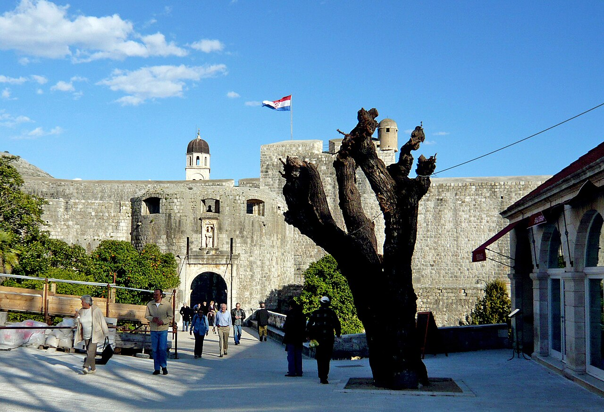

CityLoop Quest Dubrovnik


Stradun, la place Luža et le vieux port offrent un parcours relativement plat, mais la majorité des rues latérales comportent des marches. Pour une poussette ou un fauteuil roulant, entrer par Pile puis suivre l’axe central permet d’atteindre plusieurs monuments majeurs. La porte Ploče présente davantage de pente et de transitions, tandis que certaines entrées historiques possèdent des seuils étroits.
Le circuit complet des remparts n’est pas accessible aux fauteuils et demande de nombreux escaliers, parfois raides et sans échappatoire rapide. Avec de jeunes enfants, il faut prévoir eau, protection solaire et pauses ; les parapets sont sécurisés mais les passages restent étroits. Commencer tôt réduit chaleur et croisements avec les groupes.
Plusieurs musées occupent des bâtiments anciens où l’accessibilité varie selon les étages. Le musée d’art moderne, le Red History Museum et certaines institutions modernes offrent généralement des conditions plus favorables que les couvents ou forts. Contacter le lieu avant la visite permet de vérifier ascenseur, toilettes adaptées et accès temporairement modifiés.
La vieille ville possède peu d’aires de jeux. Les familles trouvent davantage d’espace à Lapad, Babin Kuk, Gruž et sur certaines plages. Lokrum plaît aux enfants grâce aux paons et au petit lac salé, mais les rochers côtiers exigent une surveillance constante. Les bateaux, escaliers et pontons ne disposent pas tous d’un accès universel.
En été, la chaleur réfléchie par la pierre peut provoquer fatigue et déshydratation. Les fontaines publiques, les cloîtres et les musées offrent des pauses, mais il ne faut pas attendre d’avoir soif. Les bébés supportent mal les heures centrales. Un porte-bébé est souvent plus pratique qu’une poussette dans les rues en escalier, à condition de protéger l’enfant du soleil.
Dubrovnik reste exigeante pour les personnes à mobilité réduite parce que sa topographie et ses monuments sont anciens. Une visite réussie repose sur un itinéraire réaliste plutôt que sur une course aux sites. L’axe Pile–Stradun–Luža–vieux port permet déjà de découvrir fontaine, palais, églises et vie urbaine sans affronter les pentes les plus difficiles. Des bancs existent surtout près des portes, du port et de certaines places ; dans les ruelles, ils sont rares. Prévoir des étapes courtes, réserver les transferts accessibles et demander l’aide du personnel des sites évite bien des imprévus, notamment lors des jours de forte chaleur ou d’événements publics.